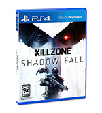

Evolution Gaming

Tech Specs
- Optical drive: Blue-Ray/DVD
- RAM: 8GB DDR5
- CPU: Single-chip x86 AMD "Jaguar" processor, 8 cores
- Storage: 500 GB 5400 RPM SATA II hard drive
Playstation 4 Review
Written by Tom Parsons29 November 2013 at stuff.tv
If you believe the buzz, the PlayStation 4 has already won this console battle. At first that was down to Microsoft committing harakiri with unpopular pricing, strict DRM and a shifting of focus away from games for its Xbox One, all of which made the more traditional, affordable and open PS4 look very appealing, especially to the hardcore gamers out there.And then, just as Microsoft appeared to have regained some credibility with a reversal of its less popular policies, Sony landed another blow in the pre-launch PR battle as reports emerged that cross-platform games (specifically big hitters Battlefield 4 and Call of Duty: Ghosts) looked better on PS4 than Xbox One.We’re not going to beat around the bush: the PS4 is awesome. But is it so awesome as to decimate the Xbox One before it’s even released? As always, there’s more to it than that.
Design and Build
Smaller and lighter than it seems in pictures, the PS4 is not a device that you’re going to have trouble finding a home for. In fact, it’s very close to the PS3 Super Slim in terms of width and height - the 30cm depth does increase its footprint, but only to PS3 Slim levels. It’s a pretty compact device, then, and that’s extra impressive when you realise that the power pack is built in, whereas the Xbox One has a big external unit. Overall this is a subtle but unique design, with the etched PS4 logo and glossy section (which is actually the removable hard drive cover) adding a touch of class. Only the slot-loader lets the side down in this regard – there’s nothing exactly wrong with it, but it’s got a bit of clunky resistance that the super-smooth Wii U drive doesn’t.
Far more important as far as we’re concerned is the noise a console makes, and the PS4 is a very stealthy device. When idling we recorded 42dB from 14cm in front of the console – just 2dB over the ambient noise in the room. While installing a game disc this rose to 51dB, but once the disc is ripped it settles back down to around 43-44dB. In short, it’s significantly quieter than the most recent versions of the PS3 and Xbox 360, and completely unnoticeable unless the room is all-but silent. Impressive.
Operating System
So you’ve ogled and plugged in the console and fondled the controller so much that it’s already covered in mucky fingerprints, now it’s time to get gaming. Actually, it’s not. At least it’s not if you want to use any of the PS4’s myriad online features or play Blu-rays and DVDs, because they require that you immediately update the firmware to 1.50. At just over 300MB it’s not going to take terribly long to download through most broadband connections. All told it should take around 6 minutes to get from starting the download, through the install and back to the (now more feature-packed) home screen.
Once done you can finally get to know the PlayStation 4 interface, known rather boringly as the PlayStation Dynamic Menu. This row of bold, square icons always contains What’s New, TV and Video, Live from PlayStation, Internet Browser, Video Unlimited, Music Unlimited and Library, with any games you’ve installed slotted in by the order of how recently you played them. This whole section is designed to feed you live information, though, so hover on What’s New and you’ll see news and updates from around the PlayStation Network (now to be known as PSN), and leaving the cursor on a game brings up a row of extra icons that include things such as new content that’s now available, the section that you last reached (so that you can hop straight back to that point), your friends’ recent activity in the game, community videos and the game manual. It’s all genuinely quick, slick and useful.
But don’t mourn the old XrossMediaBar, for it’s just an upwards-press away, and with so much content now having been moved to the PlayStation Dynamic Menu, this is now a clearer and cleaner selection of icons that takes in the likes of the PlayStation Store, Friends, Parties, Trophies and Settings. All are pretty self-explanatory although it’s well worth exploring the Settings menu to ensure all is setup the way you want – we’d definitely recommend enabling standby features so that the PS4 can download software updates and provide power via USB when it’s on standby. Pop a game disc in and the bad news is that you have to install at least some of it before you can play it – in fact the process starts automagically as soon as you slot the disc in. The good news is that this doesn’t take as long as you might imagine. In fact, we were able to play Call of Duty: Ghosts just 55 seconds after slotting it into the drive. The game continues to install in the background, but the only way to tell is a touch of extra noise from the console – the game itself plays flawlessly.
Using the PS4 is a slick and fast experience all-round, really. Whether from standby or switched off entirely the console takes just 25-30 seconds to boot, and the only stutter we managed to get in our entire time with the system was a momentary pause when we pressed the PS button during a game of Knack and immediately tried to open Killzone. And we struggled to recreate that after the one instance. There’s a pleasing openness to Sony’s approach, too. Sure, unlike with PS3 a £40 per-year PlayStation Plus subscription is now mandatory if you want to play online, but if one person in the house has subscribed, everyone else who uses that console also gets access. Ditto any games that have been purchased and downloaded. On the other hand there are a couple of odd omissions. You can’t customise the wallpaper, for example, and the suspend and resume feature isn’t yet available. More annoyingly, the PS4 doesn’t have DLNA built-in and currently won’t play media files over your network or from USB. The backlash at that announcement seemed to take Sony by surprise, though, and the company says it’s “exploring possibilities” – fingers crossed that means we’ll get media streaming in a future update.
Gaming Performance
We demand more than great games from a modern games consoles, but gaming performance still comes first, and once you’ve overcome the disappointment that 4K games are still the exclusive domain of the high-end PC the PS4 is hard to fault in the performance stakes. The fact that key cross-platform titles such as Call of Duty: Ghosts and Battlefield 4 boast higher resolution graphics on PS4 than Xbox One is a huge boost to Sony’s console, and vindication of its decision to plump for 8GB of expensive and powerful GDDR5 RAM. Developers may well learn how to get more from the Xbox One in the future (it’s not even out yet, for heaven’s sake), and indeed first-party games such as Forza 4 already hit the 1080p/60fps next-gen target figures, but the fact remains that if you want to play the big third-party games at their best, the PS4 is the console to go for on day one.
Games For Playstation 4
Killzone: Shadow Fall
"The campaign is a real drag, but Shadow Fall's multiplayer props up the package with its fun, configurable action". Read more